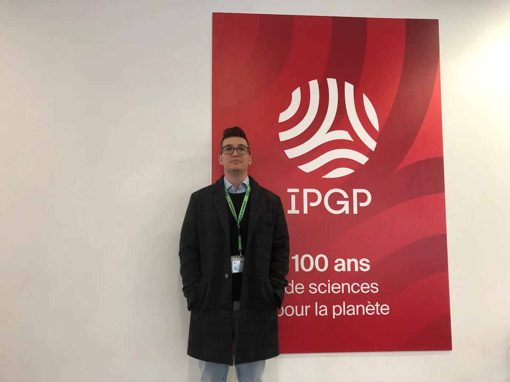

Work in progress...

Portal G1: Conheça o cientista brasileiro especialista em satélites que fez missão com a Nasa

Jornal Estadão: Quem é o cientista brasileiro que fez descoberta sobre asteroide e esteve em missões da Nasa

IPGP: Un modèle de formation des astéroïdes validé par les observations de la sonde Lucy (NASA)

Jornal da UNESP: Pesquisa soluciona enigma do formato de asteroide alvejado em primeiro experimento de defesa planetária

Revista Veja: As novas missões da Nasa e Agência Espacial Europeia para Júpiter

Jornal da UNESP: Artigo propõe nova hipótese para origem das luas Galileanas